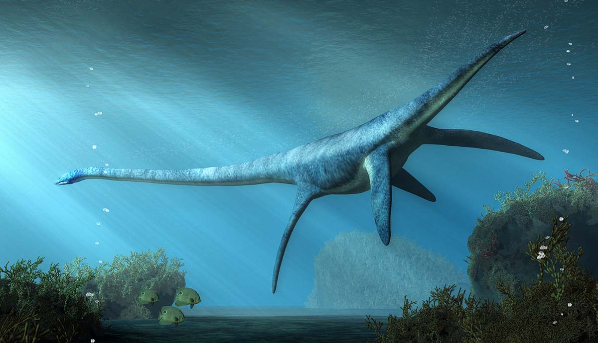
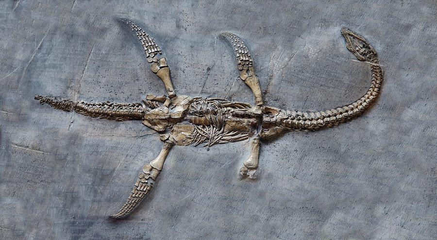
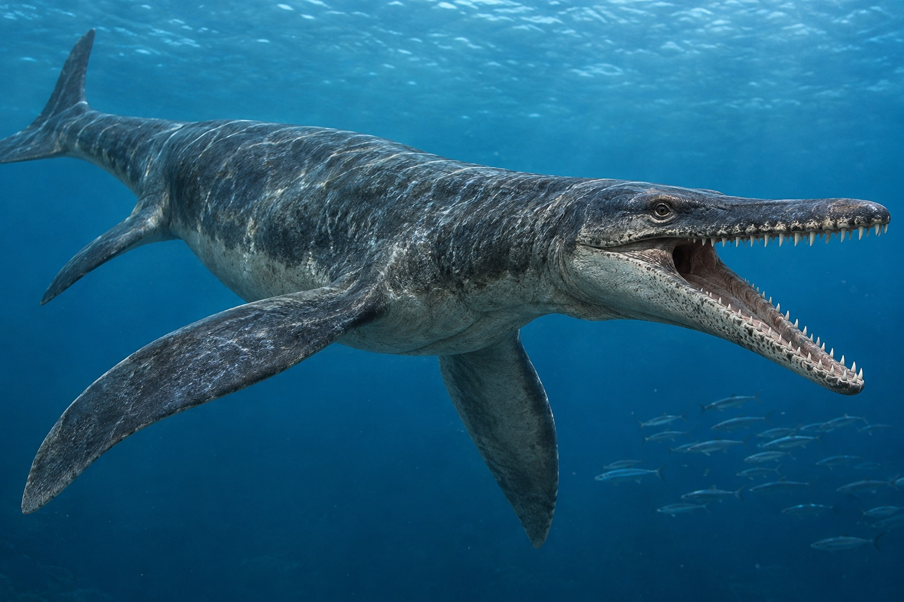
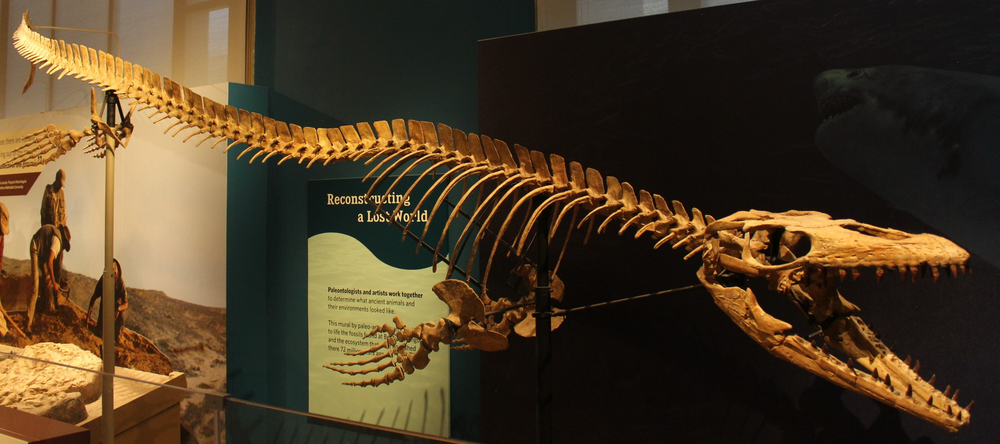
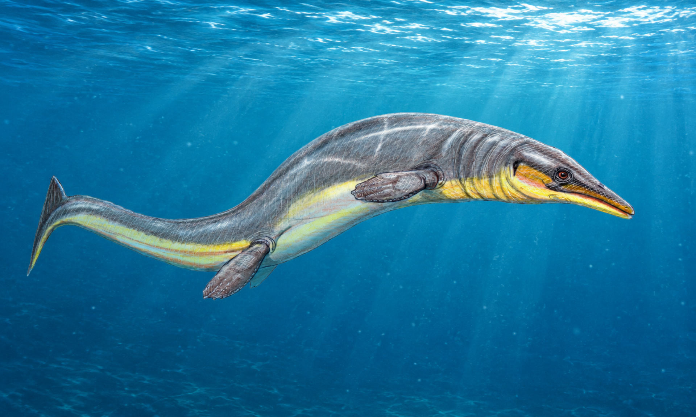
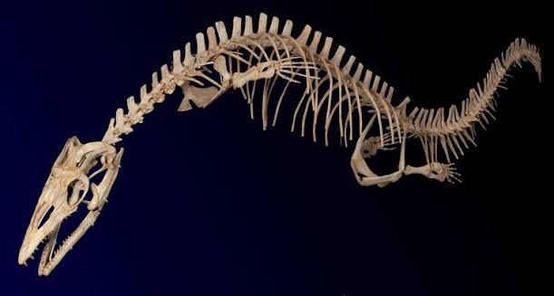
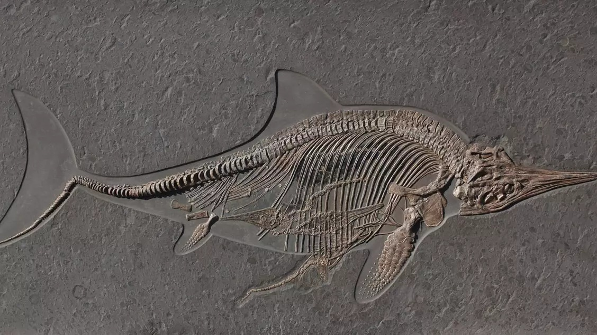
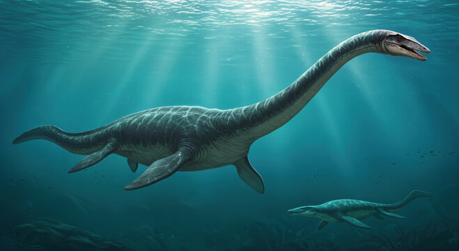
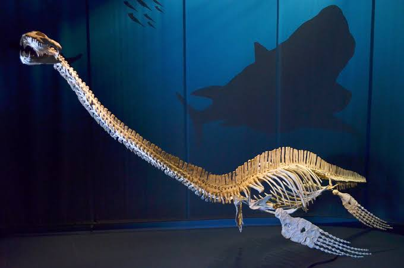

1.Plesiosaurs
เพลสิโอซอร์ (Plesiosaurs หมายถึง "ใกล้ถึง" และ Sauria หมายถึง กิ้งก่า) เป็นกลุ่มของสัตว์เลื้อยคลานทะเลขนาดใหญ่ที่สูญพันธุ์ไปแล้ว ตั้งแต่ยุคครีเตเชียสเมื่อราว 65 ล้านปีก่อน ที่อยู่ในอันดับ Plesiosauria
ช่วงเวลาที่มีชีวิตอยู่ : ปลายยุคไทรแอสซิก - ปลายยุคครีเตเชียส, 203.6–66.0
เพลสิโอซอร์ ปรากฏตัวตั้งแต่ยุคไทรแอสซิกตอนปลาย (ประมาณ 230 ล้านปีก่อน[3]) มีคอยาว แต่หัวเล็ก ในปากมีฟันแหลมคม สามารถว่ายน้ำได้อย่างรวดเร็วคล่องแคล่ว และสามารถลอยตัวผ่านน้ำได้ ฟันมีลักษณะรูปกรวยมีความแหลมคมแข็งแรงมากพอที่จะฆ่าสัตว์น้ำต่าง ๆ กินเป็นอาหารได้ และด้วยความยาวลำตัวที่มากถึง 15 เมตรเป็นอย่างน้อย จึงทำให้เพลสิโอซอร์ได้ชื่อว่าเป็นอสุรกายแห่งท้องทะเลในยุคก่อนประวัติศาสตร์ด้วยความที่เป็นสัตว์นักล่าที่อยู่บนสุดของห่วงโซ่อาหาร


2.Prognathodon
พร็อกนาโทดอน(prognathodon)เป็นสัตว์เลื้อยคลานทะเลในกลุ่มโมซาซอร์ที่ใหญ่เป็นอันดับ2รองจากไทโลซอรัสที่ยาว19เมตร(ในอดีตเคยเป็นไฮโนซอรัสที่ใหญ่ที่สุด) มันมีความยาว 14.9 เมตรและอาจหนักถึง 7 ตัน
ช่วงเวลาที่มีชีวิตอยู่ : Cretaceous period
อาหารที่พร็อกนาโทดอนชอบกินคือหอยแอมโมไนต์เพราะฟันของมันคมและแข็งแรงมาก มันจึงสามารถกัดเปลือกแอมโมไนต์ได้ และเรายังเคยพบรอยฟันของพร็อกนาโทดอนบนเปลือกแอมโมไนต์ด้วย(เป็นที่มาของฉายา "ฟันที่แข็งเหมือนเหล็ก")นอกจากนี้ พร็อกนาโทดอนยังกินทุกอย่างที่ขวางหน้า


3.Halisaurus
ฮาลิซอรัส (Halisaurus) เป็นสายพันธุ์ที่สูญพันธุ์แล้ว ของตระกูลโมซาซอร์ มันมีความยาวประมาณ 3-4 เมตร (10 -13 ฟุต) มันอาจจะเป็นโมซาซอร์ที่เล็กที่สุด เมื่อเทียบกับโมซาซอร์ชนิดอื่น ฮาลิซอรัสอาศัยอยู่ในช่วงยุคครีเทเชียส เมื่อประมาณ 85-65 ล้านปีก่อน ชื่อของมันมีความหมายว่า กิ้งก่าทะเล เหยื่อของมันอาจจะเป็นนกทะเลดึกดำบรรพ์ที่ชื่อ เฮสเปอร์รอร์นิส
ช่วงเวลาที่มีชีวิตอยู่ : ยุคครีเทเชียสตอยปลาย86.3–66 Ma
ในภาพยนตร์และสารคดี
ฮาลิโอซอรัส ปรากฏตัวสั้นๆในสารคดีของ บีบีซี เรื่อง Sea Monsters:A Walking With Dinosaurs Trilogy โดยในเรื่องมันไม่ค่อยมีบทบาทอะไรมากนัก


4.Ichthyosaurus
อิกทิโอซอรัส (อังกฤษ: Ichthyosaurus; Ichthyo = ปลา, saurus = กิ้งก่า)เป็นสัตว์เลื้อยคลานทะเลในวงศ์อิกทิโอซอร์ ชื่อของมันหมายถึง กิ้งก่าปลาอิกทิโอซอรัส
ช่วงเวลาที่มีชีวิตอยู่ : 199–189 Ma
ถูกตั้งชื่อโดย De la Beche และ Conybeare ในปี ค.ศ.1821 มันอยู่ในทะเลร่วมกับสัตว์ทะเลอื่น ๆ เช่น โรเมลลีโอซอรัส ที่เป็นผู้ล่าในตระกูลไพลโอซอร์ อิกทิโอซอรัสอาศัยอยู่ในยุคจูแรสซิก ที่ทวีปยุโรป เช่นเบลเยียม อังกฤษ สวิตเซอร์แลนด์อิกทิโอซอรัสมีความยาวประมาณ 2 เมตร ล่าปลาและปลาหมึกเป็นอาหารอิกทิโอซอร์ชนิดสุดท้ายอยู่ในยุคครีเทเชียส ชื่อ สเต็นนอปทีรีเจียส ที่มีการค้นพบเซลล์สีในตัวของมันทำให้รู้ว่ามันมีสีน้ำตาลแดง นอกจากนี้ยังมีอิกทิโอซอร์อีกหลายชนิดในยุคจูแรสซิก เช่น เท็มโนดอนโตซอรัสซึ่งมีดวงตาขนาดใหญ่


5.Elasmosaurus
อีลาสโมซอรัส (ชื่อวิทยาศาสตร์: Elasmosaurus (หมายถึง แผ่นบาง ๆ ในกระดูกเชิงกราน) + σαυρος sauros 'กิ้งก่า') เป็นสัตว์เลื้อยคลานทะเลในสกุล Elasmosaurus ในตระกูลเพลสิโอซอร์ เป็นสัตว์ประเภทคอยาว โดยมีคอยาวกว่าครึ่งหนึ่งของลำตัวเสียอีกอาศัยอยู่ยุคครีเทเชียสตอนปลายเมื่อราว 80.5 ล้านปีก่อน ในสถานที่ ๆ ปัจจุบัน คือ ทวีปอเมริกาเหนือ
อีลาสโมซอรัส มีลำตัวยาวประมาณ 10.3 เมตร (37 ฟุต) มีลักษณะเด่น คือ มีคอยาวถึง 5 เมตร (ประมาณ 16 ฟุต) ส่วนขาเป็นครีบ 4 ข้าง ความยาวของลำตัวมากกว่าครึ่งเป็นส่วนคอ ประกอบด้วยกระดูกมากกว่า 70 ชิ้น ซึ่งมีจำนวนกระดูกคอมากกว่าสัตว์ทุกชนิด ส่วนหัวค่อนข้างเล็ก และฟันคมกริบ